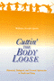

|
Closure
The Rush to End Grief and What It Costs Us
Berns, Nancy
228 pp • 6x9 • Fall 2011
paper 978-1-4399-0577-7
cloth 978-1-4399-0576-0
Excerpt available |
 |
Inheritance
Law and the Evolving Family
Brashier, Ralph C. 272 pp • 6x9 •
Fall 2003
paper 978-1-59213-222-5
cloth 978-1-59213-221-8
Excerpt available |
|
Life
and Death in Intensive Care
Cassell, Joan 248 pp • 6x9 • Spring
2005
paper 978-1-59213-336-9
cloth 978-1-59213-335-2
Excerpt available |
|
Final
Negotiations
A Story of Love, and Chronic Illness
Ellis, Carolyn
368 pp • 6x9 • Fall
1994
paper 978-1-56639-271-6
cloth 978-1-56639-270-9
Excerpt available |
 |
How We Die Now
Intimacy and the Work of Dying
Erickson, Karla A.
208 pp • 5.5x8.25 • Fall 2013
paper 978-1-4399-0824-2
cloth 978-1-4399-0823-5 |
|  |
Cuttin'
the Body Loose
Historical, Biological, and Personal Approaches to Death and Dying
Gavin, William Joseph 256 pp • 5.5x8.25
• Spring 1995
paper 978-1-56639-298-3
cloth 978-1-56639-297-6 |
 |
Drawing
the Line
Life, Death, and Ethical Choices in an American Hospital
Gorovitz, Samuel 216 pp • 5.75x8.5 •
Fall 1993
paper 978-1-56639-149-8 |
|
My
Mother's Hip
Lessons from the World of Eldercare
Margolies, Luisa,
foreword by Walter M. Bortz II, M.D.
360
pp • 6x9 • Fall 2003
paper 978-1-59213-238-6
cloth 978-1-59213-237-9
Excerpt available |
 |
Blue Juice
Euthanasia in Veterinary Medicine
Morris, Patricia
244 pp • 6x9 • Spring 2012
paper 978-1-4399-0706-1
cloth 978-1-4399-0705-4
Excerpt available |
 |
Arbitrariness
of the Death Penalty
Nakell, Barry and Kenneth A. Hardy Fall 1986
cloth 978-0-87722-443-3 |
 |
A
Complex Sorrow
Reflections on Cancer and an Abbreviated Life
Paget, Marianne A., edited by Marjorie L. DeVault 176
pp • 5.5x8.25 • Spring 1993
paper 978-1-56639-192-4
cloth 978-1-56639-041-5 |
|
Borrowed
Time
Artificial Organs and the Politics of Extending Lives
Plough, Alonzo L. 195 pp • Spring 1986
cloth 978-0-87722-415-0 |
|
Help
Your Marriage Survive the Death of a Child
Rosenblatt, Paul C.
200 pp • 5.5x8.25 • Fall 2000
paper 978-1-56639-805-3
cloth 978-1-56639-804-6
Excerpt available |
 |
Centuries
of Solace
Expressions of Maternal Grief in Popular Literature
Simonds, Wendy and Barbara Katz Rothman 390
pp • 5.5x8.25 • Spring 1992
cloth 978-0-87722-931-5 |

|
Sudden
Death and the Myth of CPR
Timmermans, Stefan, foreword by Bern Shen 272
pp • 6x9 • Fall 1999
paper 978-1-56639-716-2
cloth 978-1-56639-715-5
Excerpt available |

|
Life
After Death
Widows in Pennsylvania, 1750-1850
Wilson, Lisa 192 pp • Fall 1991
cloth 978-0-87722-883-7 |